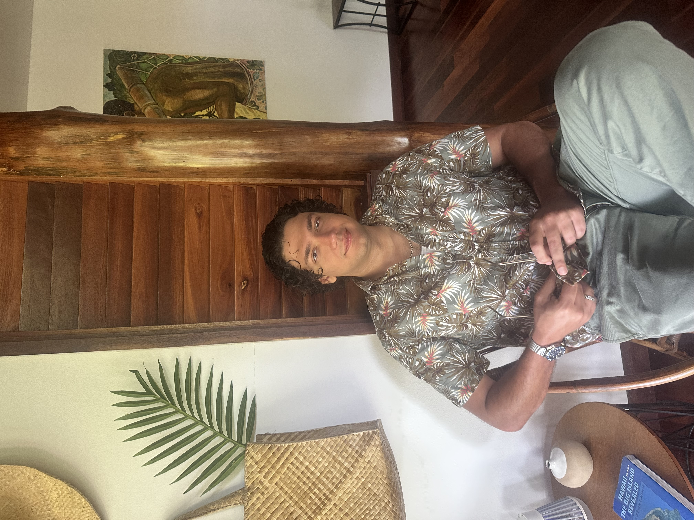

Senior Software Engineer
Building real-time data pipelines and distributed security systems at scale.
About

I'm a Senior Software Engineer at SecurityScorecard, where I architect real-time data streaming infrastructure using Apache Flink and Kafka - ingesting billions of daily security observations with stateful enrichment at scale.
Previously at Securonix, I built high-performance SIEM cloud applications on AWS and led cloud security engineering, including a Redis optimization that reduced cloud costs by $2.3M per year in collaboration with the AWS Elasticache team.
I hold an MS in Computer Science (Cybersecurity) from Boston University and conducted research on privacy-sensitive contact tracing at BU's Hariri Institute for Computing.
Outside of work I play soccer, cook from Gordon Ramsay's YouTube videos, and will enthusiastically argue that Manchester City are the best team in the land and all the world.
Skills
Experience
Projects & Writing
Writing
How 50 deploy-measure-adjust cycles got MOP-v2 from 9M to 35M+ records/min with zero new infrastructure.
Read moreWhat happens when two Kafka streams move at completely different speeds - and how Flink's idle timeout saves you.
Read moreEventual consistency via Kafka + ReplicatedReplacingMergeTree - and why that tradeoff was the right one.
Read moreProfile first, design second. How a 29x data reduction and a query-time JOIN saved 170 GB and an entire cluster.
Read more50+ Protobuf definitions, three build systems, Buf governance, and CI/CD that makes the right thing automatic.
Read moreNIC saturation, retry logic hiding a real problem, and what it took to convince an AWS service team to act.
Read moreKinesis + Timestream + Grafana. Same observability coverage, a fraction of the cost.
Read more2,000 dropped events/month → 400. Why the simplest durable store was the right one for this access pattern.
Read moreEarlier work
Cross-platform BLE contact tracing app built at BU's Hariri Institute.
Read moreETL operators with Ray distributed actors, LIME/SHAP explainability, and Jaeger metrics. 70% perf improvement.
Read moreGrant-funded library for monitoring ZCash node service status and health.
Read moreResearch on threshold signature schemes and their applications in distributed ledger systems.
Read paperImplementation of algebraic message authentication code schemes using the Signal protocol.
View on GitHubResearch paper on using Software-Defined Networking as infrastructure backbone for IoT.
Read paper